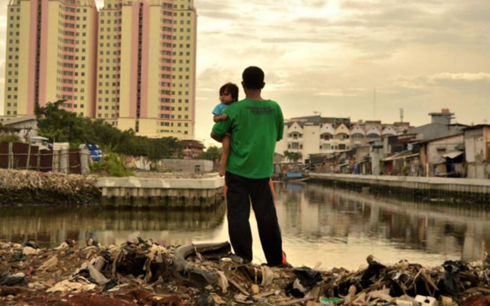

<!DOCTYPE html>
<html lang="en">
<head>
    <meta charset="UTF-8">
    <meta name="viewport" content="width=device-width, initial-scale=1.0">
    <link rel="stylesheet" href="goals.css">
    <script src="goals.js" defer></script>
    <title>Goals</title>
    <header>
        <h1>Our Goals</h1>
        <nav id="mainNav">
            <ul>
             <li class = "nav"><a href="index.html">Home</a></li>
             <li class = "nav"><a href="team.html">Meet our Team</a></li>
             <li class = "nav"><a href="goals.html">Goals</a></li>
             <li class = "nav"><a href="Forms.html">Sign Up</a></li>
            </ul>
         </nav>
    </header>
</head>
<body>
    <section class = "container"></section>
    <main>
    <section id="goals-section"></section>
    </main>
    </section>
</body>
<footer>
    <p>
        Copyright ©2023 Norwich Local Sustainability Advisory Committee
    </p>
</footer>
</html>

<!-- <article id="zeroBox" class="Box">
    <h2 id="zeroHunger">Zero hunger</h2>
    <p class="allP"> The number of people facing hunger and food insecurity has been on the rise since 2015, with the pandemic, conflict climate change and growing inequalities exacerbating the situation. In 2015, 589 million people were experiencing hunger, and by 2021, that number had risen to 768 million. Projections show that by 2030, approximately 670 million people will still be facing hunger - 8% of the world's population, the same as in 2015. Despite global efforts, too many children continue suffering from malnutrition and the current annual rate of reduction in stunting must increase by 2.2 times to meet the global target. </p>
    
</article>
<article id="reducedBox" class="Box">
    <h2 id="reducedInqual">Reduced Inequalities</h2>
    <p class="allP">Before the pandemic, the incomes of the bottom 40% of the population grew faster than the national average in a majority of countries. The impacts of the pandemic and uneven recoveries in different regions of the world threaten to reverse that trend and further worsen global inequality. Record numbers are being forced to flee conflicts and economic hardship. By mid-2022, one in 251 people worldwide was a refugee, the highest proportion ever documented. Achieving SDG 10 requires concerted efforts to address the root causes of wage disparities and access to resources both within- and between-country inequality. </p>
    
</article>
<article id="genderBox"class="Box">
    <h2 id="genderEqual">Gender Equality</h2>
    <p class="allP">The world is not on track to achieve gender equality by 2030. At the global level, none of the 18 indicators “met or almost met” the targets and only one is “close to target”. At the current rate of progress, it is estimated that it will take up to 286 years to close gaps in leg al protection and remove discriminatory laws, 140 years for women to be represented equally in positions of power and leadership in the workplace, and 47 years to achieve equal representation in national parliaments. Cascading global crises have highlighted and exacerbated existing gender inequalities, such as unequal access to healthcare, education, and economic opportunities.</p>
    
</article> -->